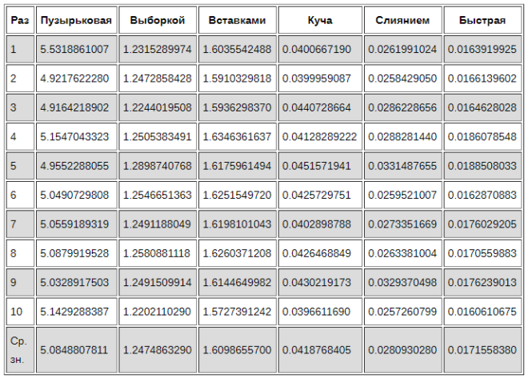
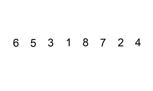

Основы Computer Science
Автор курса - Влад Савило

Алгоритмы. Подведение итогов
«Нотация О большое — это математическая нотация, которая описывает ограничивающее поведение функции, когда аргумент стремится к определенному значению или бесконечности

Факториал - n!
100! = 1 * 2 * 3 * ... * 99 * 100
100! = 93 326 215 443 944 152 681 699 238 856 266 700 490 715 968 264 381 621 468 592 963 895 217 599 993 229 915 608 941 463 976 156 518 286 253 697 920 827 223 758 251 185 210 916 864 000 000 000 000 000 000 000 000
Сортировка
Массив из 5000 чисел от 0 до 1000
Пузырьковая сортировка

def bubble_sort(nums):
# Устанавливаем swapped в True, чтобы цикл запустился
swapped = True
while swapped:
swapped = False
for i in range(len(nums) - 1):
if nums[i] > nums[i + 1]:
nums[i], nums[i + 1] = nums[i + 1], nums[i]
# Устанавливаем swapped в True для следующей итерации
swapped = True
random_list_of_nums = [5, 2, 1, 8, 4]
bubble_sort(random_list_of_nums)
Сортировка выборкой

void SelectionSort(vector& values) {
for (auto i = values.begin(); i != values.end(); ++i) {
auto j = std::min_element(i, values.end());
swap(*i, *j);
}
} С ошибкой. Найти и исправить самостоятельно!
def selection_sort(nums):
# Значение i соответствует кол-ву отсортированных значений
for i in range(len(nums)):
# Исходно считаем наименьшим первый элемент
lowest_value_index = i
# Этот цикл перебирает несортированные элементы
for j in range(i + 1, len(nums)):
if nums[j] < nums[lowest_value_index]:
lowest_value_index = j
# Самый маленький элемент меняем с первым в списке
nums[i], nums[lowest_value_index] = nums[lowest_value_index], nums[i]
random_list_of_nums = [12, 8, 3, 20, 11]
selection_sort(random_list_of_nums)Сортировка вставками
def insertion_sort(nums):
# Сортировку начинаем со второго элемента,
# т.к. считается, что первый элемент уже отсортирован
for i in range(1, len(nums)):
item_to_insert = nums[i]
# Сохраняем ссылку на индекс предыдущего элемента
j = i - 1
# Элементы отсортированного сегмента перемещаем вперёд,
# если они больше элемента для вставки
while j >= 0 and nums[j] > item_to_insert:
nums[j + 1] = nums[j]
j -= 1
# Вставляем элемент
nums[j + 1] = item_to_insert
random_list_of_nums = [9, 1, 15, 28, 6]
insertion_sort(random_list_of_nums)Пирамидальная сортировка

В информатике ку́ча (англ. heap) — это специализированная структура данных типа дерево, которая удовлетворяет свойству кучи: если B является узлом-потомком узла A, то ключ(A) ≥ ключ(B).

def heapify(nums, heap_size, root_index):
# Индекс наибольшего элемента считаем корневым индексом
largest = root_index
left_child = (2 * root_index) + 1
right_child = (2 * root_index) + 2
# Если левый потомок корня — допустимый индекс, а элемент больше,
# чем текущий наибольший, обновляем наибольший элемент
if left_child < heap_size and nums[left_child] > nums[largest]:
largest = left_child
# То же самое для правого потомка корня
if right_child < heap_size and nums[right_child] > nums[largest]:
largest = right_child
# Если наибольший элемент больше не корневой, они меняются местами
if largest != root_index:
nums[root_index], nums[largest] = nums[largest], nums[root_index]
# Heapify the new root element to ensure it's the largest
heapify(nums, heap_size, largest)
def heap_sort(nums):
n = len(nums)
# Создаём Max Heap из списка
# Второй аргумент означает остановку алгоритма перед элементом -1,
# т.е. перед первым элементом списка
# 3-й аргумент означает повторный проход по списку
# в обратном направлении, уменьшая счётчик i на 1
for i in range(n, -1, -1):
heapify(nums, n, i)
# Перемещаем корень Max Heap в конец списка
for i in range(n - 1, 0, -1):
nums[i], nums[0] = nums[0], nums[i]
heapify(nums, i, 0)
random_list_of_nums = [35, 12, 43, 8, 51]
heap_sort(random_list_of_nums)Сортировка слиянием

def merge(left_list, right_list):
sorted_list = []
left_list_index = right_list_index = 0
# Длина списков часто используется,
# поэтому создадим переменные для удобства
left_length, right_length = len(left_list), len(right_list)
for _ in range(left_length + right_length):
if left_list_index < left_length and right_list_index < right_length:
# Сравниваем первые элементы в начале каждого списка
# Если первый элемент левого подсписка меньше, добавляем его
# в отсортированный массив
if left_list[left_list_index] <= right_list[right_list_index]:
sorted_list.append(left_list[left_list_index])
left_list_index += 1
# Если первый элемент правого подсписка меньше, добавляем его
# в отсортированный массив
else:
sorted_list.append(right_list[right_list_index])
right_list_index += 1
# Если достигнут конец левого списка, элементы правого списка
# добавляем в конец результирующего списка
elif left_list_index == left_length:
sorted_list.append(right_list[right_list_index])
right_list_index += 1
# Если достигнут конец правого списка, элементы левого списка
# добавляем в отсортированный массив
elif right_list_index == right_length:
sorted_list.append(left_list[left_list_index])
left_list_index += 1
return sorted_list
def merge_sort(nums):
# Возвращаем список, если он состоит из одного элемента
if len(nums) <= 1:
return nums
# Для того чтобы найти середину списка, используем деление без остатка
# Индексы должны быть integer
mid = len(nums) // 2
# Сортируем и объединяем подсписки
left_list = merge_sort(nums[:mid])
right_list = merge_sort(nums[mid:])
# Объединяем отсортированные списки в результирующий
return merge(left_list, right_list)
random_list_of_nums = [120, 45, 68, 250, 176]
random_list_of_nums = merge_sort(random_list_of_nums)Быстрая сортировка

def partition(nums, low, high):
# Выбираем средний элемент в качестве опорного
# Также возможен выбор первого, последнего
# или произвольного элементов в качестве опорного
pivot = nums[(low + high) // 2]
i = low - 1
j = high + 1
while True:
i += 1
while nums[i] < pivot:
i += 1
j -= 1
while nums[j] > pivot:
j -= 1
if i >= j:
return j
# Если элемент с индексом i (слева от опорного) больше, чем
# элемент с индексом j (справа от опорного), меняем их местами
nums[i], nums[j] = nums[j], nums[i]
def quick_sort(nums):
# Создадим вспомогательную функцию, которая вызывается рекурсивно
def _quick_sort(items, low, high):
if low < high:
# This is the index after the pivot, where our lists are split
split_index = partition(items, low, high)
_quick_sort(items, low, split_index)
_quick_sort(items, split_index + 1, high)
_quick_sort(nums, 0, len(nums) - 1)
random_list_of_nums = [22, 5, 1, 18, 99]
quick_sort(random_list_of_nums)Массив из 5000 чисел от 0 до 1000
Материалы
- Объяснение алгоритмов сортировки с примерами на Python
- Визуализации алгоритмов сортировки
- Основные виды сортировок и примеры их реализации
- YouTube - Viktor Karpov - Алгосики для самых маленьких
- codewars.com
- leetcode.com
- Грокаем алгоритмы. Иллюстрированное пособие для программистов и любопытствующих | Бхаргава Адитья
- Теоретический минимум по Computer Science. Все что нужно программисту и разработчику | Фило Владстон Феррейра
- Рисовый штурм и еще 21 способ мыслить нестандартно | Майкл Микалко
- Определение целей и задач курса.
- Знакомство с устройством компьютера.
- Структура IT компании. Роли в проекте.
- Языки программирования.
- Понятие среды разработки.
- Введение понятия типа данных.
- Представление о размере и диапазоне значений.
- Объяснение понятий «переменная», «идентификатор».
- Формирование представления о константах, литералах, строках и проводимых с ними операциях.
- Слушатели изучат примеры программ, будут знать о преобразовании типов данных и освоят на практике линейную вычислительную программу.
- Знания об операторах ветвлений, сравнения.
- Информация об использовании ветвления в блок-схемах.
- Изучение способов записи и дополнительных конструкций сложного ветвления.
- Обучаемые освоят логические операции, а также потренируются делать программу с разветвлениями.
- Формирование знаний о необходимости применения циклов, их обозначении на рабочем языке курса.
- Знакомство с понятиями «вложенные циклы», «прерывание цикла», а также с примерами использования циклических конструкций.
- Учащиеся получат навыки пошагового выполнения цикла в режиме отладки.
- Понятие «массивы»
- Синтаксис массивов и идентификация
- Примерами использования одномерных массивов на языке блок-схем
- Напишем соответствующие программы
- Алгоритмы
ТЕСТ
if (answer1 && answer2 && answer3) {
return 'Congratulations'
} else {
return 'Think about it'
}